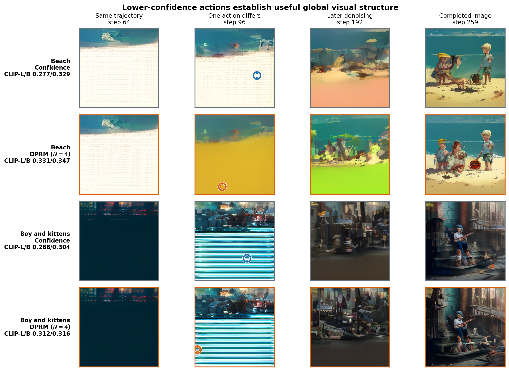
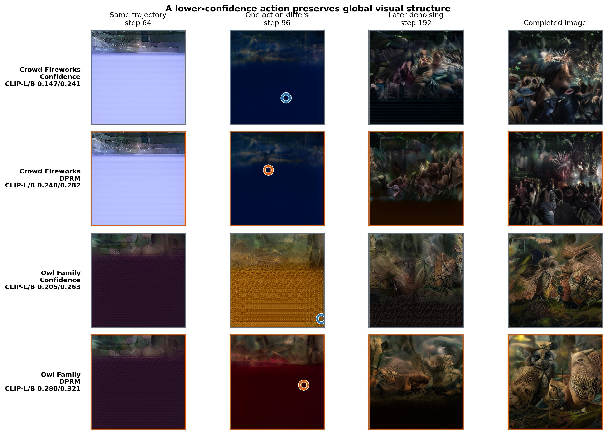
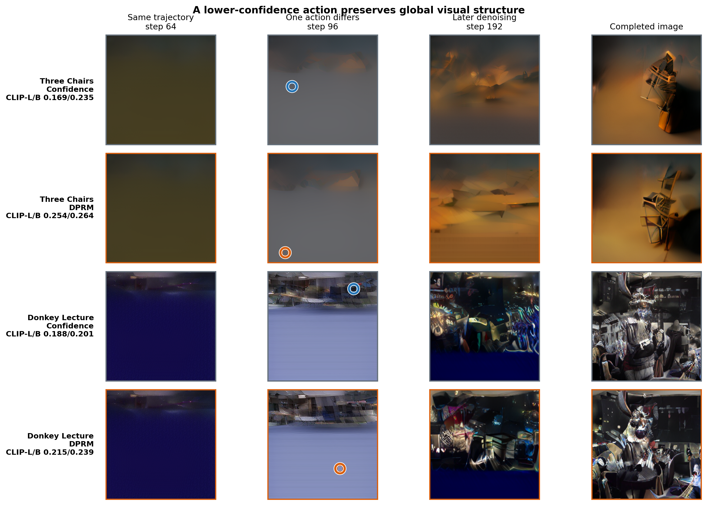
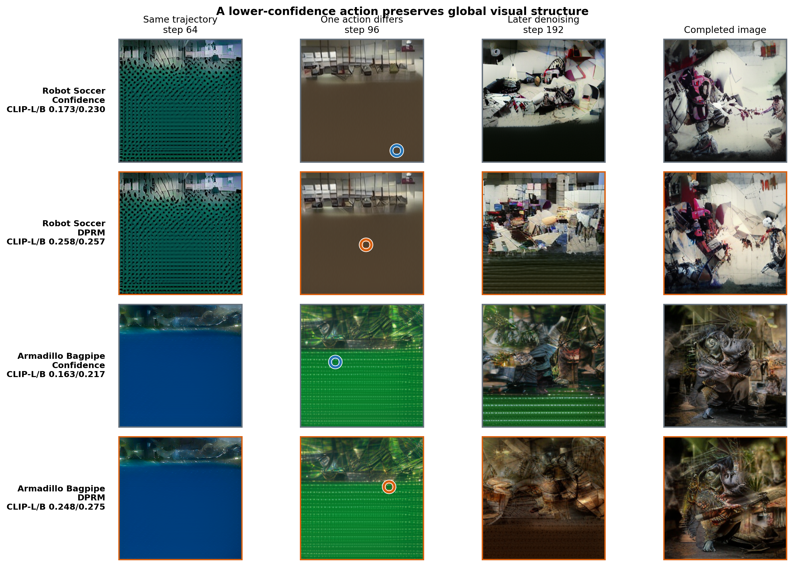
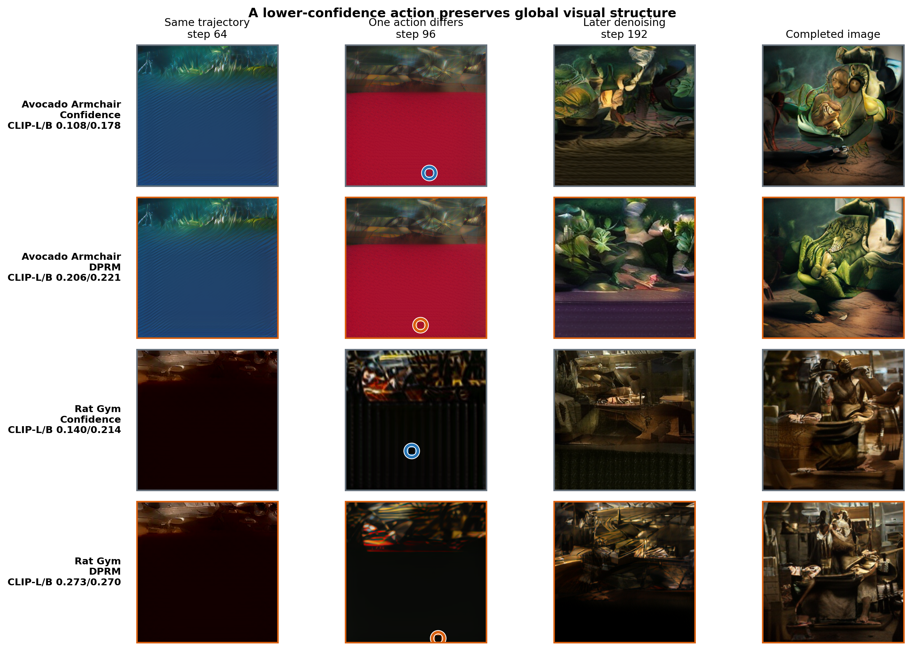

Process reward models for masked diffusion
DPRM
A Plug-in Token-Ordering Module for Diffusion Language Models
Keep the denoiser and token sampler. Change which position is committed next using terminal utility.

+13.2%Omni CLIP-L/14
+14.6%PUMA accuracy
+12.9%Countdown Hard
9 hostsone ordering interface
Omni-Diffusion
One action changes the image trajectory
Both rows share the same canvas through step 95. At step 96, confidence commits its lowest-entropy position; DPRM selects a lower-confidence action with higher estimated terminal value.





CLIP-L/14
Confidence0.18661
DPRM0.21125
CLIP-B/32
Confidence0.23836
DPRM0.24854
512 untouched prompts. Paired 95% intervals for both improvements exclude zero.
Nine host settings
Ordering gains across modalities
HostMetricConfidenceDPRM
Omni-DiffusionCLIP-L/140.186610.21125
Omni-DiffusionCLIP-B/320.238360.24854
LLaDA-VRealWorldQA47.35%48.92%
LLaDA-VNumeric / count32.05%41.03%
HostMetricConfidenceDPRM
PUMAGSM8K accuracy30.10%34.50%
DMPOMATH Hard44.347.9
DMPOCountdown Hard29.633.4
PrismVoted accuracy82.41%83.85%
HostRewarded objectiveConfidenceDPRM
DPLM-2 BitBalanced score0.73550.7377
DCMNonzero recovery0.01830.0198
GenMol V2QED0.63920.7350
SDPO-DNATotal utility0.3842.119
Saved trajectories and controls
What changes when order changes?


Reproducibility